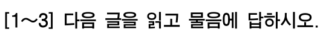
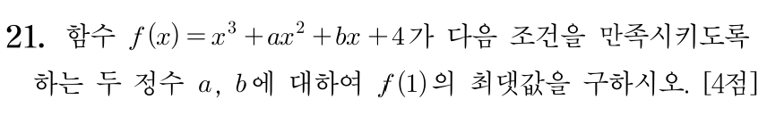
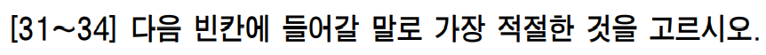

께 · 드리다
-습니다
봬요
화법과 언어 · 3. 문장과 담화, 국어의 변화
(1) 문장의 짜임과 문법 요소 · 2차시
도입 · 지난 시간 돌아보기
지난 시간
문장 종결 표현
평서문
의문문
명령문
청유문
감탄문
← 종결 어미로
구분해요!
높임 표현
주체 높임법
-(으)시-
께서
특수 어휘
객체 높임 · 상대 높임
← 오늘 배울 것!
도입 · 지난 시간 복습
문장 종결 표현
Q1
문장의 다섯 유형은?
무엇을 보고 나눌까?
평서·의문·명령·청유·감탄
→ 종결 어미로 나눠요
Q2
“창문 좀 열어 줄 수 있니?”
문장 유형은? 실제 의도는?
의문문인데 실제 의도는 요청
→ 형식 ≠ 기능
주체 높임
Q3
주체 높임을 실현하는
세 가지 방법은?
‘-(으)시-’, 주격 조사 ‘께서’,
특수 어휘 (계시다·주무시다…)
Q4
“할머니께서는 귀가 밝으시다.”
직접 높임? 간접 높임?
간접 높임
(귀를 높여 할머니를 높임)
도입 · 오늘 배울 것
할머니께서
주체
할아버지께
객체
선물을
드리
객체
시
주체
었
어요.
상대
지난 시간 ✓
서술의 주체
= 주어가 가리키는 대상
오늘 ①
서술의 객체
= 목적어·부사어가 가리키는 대상
오늘 ②
말을 듣는 상대
= 청자
학습 목표
1
객체 높임의 개념과 실현 방법을 이해한다.
2
상대 높임의 체계를 이해하고, 맥락에 맞는 표현을 고른다.
성취기준 [12화언01-05] 담화의 맥락에 적절한 어휘와 문법 요소를 선택하여 화자의 태도를 드러낸다.
2. 높임 표현 · (2) 객체 높임법 · 교과서 102쪽
객체 높임 = 객체를 높이는 것. 그럼 객체는 문장 성분으로 뭘까?
→ 목적어, 부사어
정확히는 목적어·부사어가 가리키는 대상을 높여요!
가
할아버지를 모시고 식당에 갔다.
할아버지를 = 목적어
모시다 = 특수 어휘
나
할아버지께 과일을 드렸다.
할아버지께 = 부사어
드리다 = 특수 어휘
주어(나)는 생략됐지만, 높임을 받는 사람은 바로 할아버지!
2. 높임 표현 · (2) 객체 높임법
①
‘에게·한테’ 대신 ‘께’
이 문제는 선생님께 여쭤봐.
②
중학교 때 선생님을 뵈니 정말 반가웠다.
주체 높임의 ‘-(으)시-’ 같은 선어말 어미는? → 지금의 객체 높임에는 없어요.
중세 국어엔 -ᄉᆞᆸ- · -ᅀᆞᆸ- · -ᄌᆞᆸ- (모의고사에서 봤죠?) → 지금은 사라짐, 흔적은 마지막에 참고로!
객체 높임의 특수 어휘 · 학습지 3쪽
데리다
?
주다
?
보다
?
묻다
?
모시다
드리다
뵈다 / 뵙다
여쭈다 /
여쭙다
‘보다’·‘묻다’는 두 개씩! 언제 어느 쪽을 쓸까요?
객체 높임 · 뵙다와 뵈다는 언제?
1
선생님, 내일 학교에서 ( 봬요 / 뵈요 ).
2
처음 ( 뵙겠습니다 / 봬겠습니다 ).
3
그럼 그때 ( 뵐게요 / 뵙을게요 ).
봬요
뵙겠습니다
뵐게요
기준은?
뵙- + 자음으로 시작하는 어미
뵙고 · 뵙지 · 뵙겠습니다
뵈- + 모음으로 시작하는 어미
뵈어 → 봬 · 뵈었다 → 뵀다
꿀팁 ‘뵈’ 자리에 ‘하’, ‘봬’ 자리에 ‘해’를 넣어 보기 → “내일 해요”(○) “내일 하요”(×) → 봬요!
객체 높임 · 적용해 보기
예문
높임을 받는 대상
어떻게?
선생님께 전화를 드렸어요.
선생님 (부사어)
‘께’ + ‘드리다’
교수님께 메일을 드리겠습니다.
교수님 (부사어)
‘께’ + ‘드리다’
부모님을 모시고 여행을 갔다.
부모님 (목적어)
‘모시다’
하나 더! 나를 낮춰서 상대를 높이는 ‘겸양’
저희 어머니께 어울릴 만한 옷 좀 보여 주세요. · 제가 할게요.
단, 나라는 낮출 수 없으니 ‘저희 나라’(×) → ‘우리나라’(○)
2. 높임 표현 · (3) 상대 높임법
가십니다
가요
가
← 1차시에 미리 봤던 그 친구!
상대 높임은 주로 종결 어미로 실현돼요. → 그래서 문장 종결 표현을 먼저 배웠죠!
상대 높임법 · 교과서 103쪽
생각해 볼까요?
같은 학생인데
친구에게는 “해야 돼.”
발표에서는 “시작하겠습니다.”
왜 말투가 달라졌을까?
상대 높임을 다 배우고 나서 다시 볼게요!
상대 높임법 · 격식체와 비격식체
공적이고 예의를 갖추어야 하는 상황
→ 심리적 거리감이 드러나기도 해요
“지금부터 회의를 시작하겠습니다.”
하십시오체 · 하오체 · 하게체 · 해라체
격식을 덜 차리는 상황
→ 화자와 청자의 친밀함이 드러나요
“우리 회의 언제 해?”
해요체 · 해체
상대 높임법 · 등급 알아보기
격식체
하십시오체
가십니다
하오체
가오
↑ 높이는 쪽 · 낮추는 쪽 ↓
하게체
가네
해라체
간다
비격식체
해요체
가요
해체
가
이름은 ‘하다’의 명령형에서: 하십시오 · 하오 · 하게 · 해라 · 해요 · 해
상대 높임법 · 하십시오체
뉴스 앵커 → 시청자
“안녕하십니까, 9시 뉴스입니다.”
지하철 안내 방송 → 승객
“이번 역은 시청역입니다.”
발표자 → 청중
“지금부터 발표를 시작하겠습니다.”
면접관 ↔ 지원자
“자기소개를 해 주십시오.” “네, 알겠습니다.”
여러 사람 앞, 공적인 자리, 처음 만나는 윗사람 → -습니다 / -습니까?
상대 높임법 · 하십시오체의 빈칸
하십시오체
가십니다
가십니까?
가십시오
청유 ?
감탄 ?
먼저 직접 만들어 볼까요? “선생님, 같이 …”
(가시지요)
–
하십시오체에는 고유한 청유형도, 감탄형도 없어요. ‘가시지요’는 해요체 ‘-지요’를 빌려 온 것!
× 윗사람에게 쓰면 어색해요
“선생님, 같이 사진 찍읍시다!”
‘-ㅂ시다’는 하오체 청유형 → 높임이 모자라요
○ 이렇게 바꿔 말해요
“같이 사진 찍으시지요.”
“같이 사진 찍어요, 선생님.” (해요체)
“같이 사진 찍어 주시겠어요?”
상대 높임법 · 하오체
수능 국어 영역

수능 수학 영역

수능 영어 영역

잔디밭에 들어가지 마시오
미시오
당기시오
‘-시오’는 하십시오체?
→ 하오체!
주체 높임 ‘-시-’ + 하오체 명령형 ‘-오’
말로는 안 써도 시험지·표지판 속엔 살아 있어요!
상대 높임법 · 하오체
영상 1 · 유배 온 단종 vs 촌장 흥도
단종 “그만 물러가시오.”
매화 “물러가라 하시지 않소.”
영상 2 · 상왕 단종과 한명회
단종 “…드시오.”
단종 “내 차례라 오신 겁니까?”
이상하지 않나요?
상왕이 신하에게 하오체,
하십시오체로 높여서 말해요.
단종이 느끼는 자리
왕위를 빼앗은 세조와 그 측근 한명회 앞에서 기를 펴지 못하고 눌려 있어요.
→ 신분은 상왕이어도, 마음속에서는 신하가 더 높은 자리에 있어요.
높임 등급엔 화자가 느끼는 관계가 드러나요!
상대 높임법 · 하게체
영상 3 · 〈왕과 사는 남자〉
“좋은 건 자네가 먹게.”
영상 4 · 〈관상〉 수양대군이 관상가에게
“내가 왕이 될 상인가?”
“어서 말해 보게.”
하게체 = 낮추지만 대우해 주는 말
아랫사람이지만 함부로 대하지 않고 대우해 줄 때 써요.
호칭 ‘자네’ · 명령 ‘-게’ · 의문 ‘-는가/-나’
요즘에도 들을 수 있어요
장인 → 사위 “자네 왔는가?”
교수 → 성인 제자 “앉게.”
상대 높임법 · 표로 정리하기 (교과서 103쪽)
등급
평서법
의문법
명령법
청유법
감탄법
격식체
하십시오체
가십니다
가십니까?
가십시오
(가시지요)
–
하오체
가(시)오
가(시)오?
가(시)오
갑시다
가는구려
하게체
가네, 감세
가는가?, 가나?
가게
가세
가는구먼
해라체
간다
가니?
가(거)라
가자
가는구나
비격식체
해요체
가요
가요?
가(세/셔)요
가(세/셔)요
가(세/셔)요
해체
가, 가지
가?, 가지?
가, 가지
가, 가지
가, 가지
상대 높임법 · 하나 더
해체
+
요
=
해요체
그래서요?
밥을요, 다 먹었어요.
왜요?
‘요’는 문장 끝이 아닌 자리에도 붙어 높임을 더하는 보조사예요.
그래서 교과서는 상대 높임이 “주로 종결 어미로 실현된다”고 해요.
상대 높임법 · 등급 맞히기
앵커 → 시청자
“안녕하십니까, 저녁 뉴스입니다.”
공원 표지판
“잔디밭에 들어가지 마시오.”
장인 → 사위
“자네, 이리 와서 앉게.”
어머니 → 아들
“숙제 다 하고 놀아라.”
학생 → 담임 선생님
“선생님, 질문이 있어요.”
친구 → 친구
“매점 같이 갈래?”
하십시오체
하오체
하게체
해라체
해요체
해체
상대 높임법 · 직접 말해 보기
교장 선생님께
(조회 시간, 여러 사람 앞)
담임 선생님께
(교무실에서)
짝꿍에게
(쉬는 시간)
어린 동생에게
(집에서)
창문 좀 닫아 주십시오. 하십시오체
창문 좀 닫아 주세요. 해요체
창문 좀 닫아 줘. 해체
창문 좀 닫아 줘라. 해라체
더 공손하게? → “창문 좀 닫아 주시겠어요?” (의문문으로 부탁하기)
상대 높임법 · 교과서 103쪽 다시 보기
가 · 쉬는 시간, 친구에게
‘돼’ = -어 → 해체
나 · 반 전체 앞, 발표
‘-습니다’ → 하십시오체
왜 다를까?
→ 담화 맥락(듣는 사람, 상황)이 다르니까!
단종의 하오체·하십시오체도 같은 원리!
같은 사람에게도 상황에 따라 격식체와 비격식체를 오갈 수 있어요.
쉬는 시간 친구에겐 “해야 돼.”(해체) → 그 친구가 앉아 있는 발표 자리에선 “시작하겠습니다.”(하십시오체)
교과서 103쪽 · 생각하기
그 여학생은 왜 발표에서는 ‘-습니다’를,
친구에게는 ‘-어’를 골랐을까?
듣는 사람을 높여
존중하는 태도
발표의 ‘-습니다’
공적인 자리에
예의를 갖추는 태도
여러 사람 앞, 수업 시간
친구에게 해체 → 친밀감
친구에게 ‘-습니다’ → 거리감
→ 높임 표현을 고르는 것 = 화자의 태도를 드러내는 것 (1차시 ‘문법 요소의 활용’!)
더 알아보기 ① · 옛날 국어의 객체 높임
옛날 국어
객체 높임 선어말 어미가 있었어요. -ᄉᆞᆸ- · -ᅀᆞᆸ- · -ᄌᆞᆸ-
뵈ᅀᆞᆸ다 → 뵙다
엳ᄌᆞᆸ다 → 여쭙다
선어말 어미는 사라졌지만, 몇몇 단어 속에 ‘ㅂ’으로 굳어 남았어요.
그래서 ‘ㅂ’이 있는 쪽이
높임이 한 겹 더!
‘뵙다’는 ‘뵈다’보다 더 겸양의 뜻을 나타내요. (지도서)
‘-습니다’의 ‘습’에도 이 흔적이 있어요 → 바로 다음 장에서!
더 알아보기 ② · 옛날 국어의 상대 높임
옛날엔 상대 높임 선어말 어미가 따로!
평서 ᄒᆞᄂᆞ니이다 → 합니다
의문 ᄒᆞᄂᆞ니잇가 → 합니까
‘-이-’, ‘-잇-’이 듣는 사람을 높였어요.
‘습’의 고향은 객체 높임
객체 높임 -ᄉᆞᆸ-
→ 오늘날 -습니다의 ‘습’
객체를 높이던 말이 듣는 사람을 높이는 말 속으로 들어갔어요.
높임법도 시간이 흐르며 모양과 쓰임이 바뀌어요 → 3단원 ‘국어의 변화’에서 또 만나요!
정리
누구를?
주어가 가리키는 대상
어떻게?
-(으)시-, 께서, 특수 어휘
할머니께서 오셨어요.
누구를?
목적어·부사어가 가리키는 대상
어떻게?
께, 특수 어휘
(모시다·드리다·뵙다·여쭙다)
할아버지께 과일을 드렸다.
누구를?
말을 듣는 사람(청자)
어떻게?
주로 종결 어미
격식체 4 + 비격식체 2
발표를 시작하겠습니다.
정리 · 교과서 103쪽 확인하기
㉠
어머니께 옷을 사 드렸다.
객체 높임
부사격 조사 ‘께’ + 특수 어휘 ‘드리다’
㉡
선생님께서 책을 주셨다.
주체 높임
주격 조사 ‘께서’ + 선어말 어미 ‘-시-’
㉢
아버지, 버스 왔어요.
상대 높임 (해요체)
청자인 아버지를 ‘-어요’로 높임
㉢에서 ‘버스 오셨어요’라고 하면? → 사물 높임(×)! 높이는 건 듣는 아버지예요.
정리 · 학습지 작성
(2) 객체 높임법
• 괄호: 서술의 객체인 ( 목적어 )나 ( 부사어 )
• 특수 어휘 표
데리다 · 주다 · 보다 · 묻다
보다·묻다는 두 칸 다 채우기!
(3) 상대 높임법
• 괄호: 말을 듣는 상대인 ( 청자 )
• 상대 높임 표에서 오늘 본 것 표시하기
하십시오체 청유형 빈칸 / ‘-시오’는 어느 줄?
‘하다’로 된 학습지 표와 ‘가다’ 표 비교해 보기
학습 활동
활동지
수능 기출
다음 시간 예고 · 3차시
교과서 학습 활동 · 활동지 ‘높임의 대상 찾기’
대학수학능력시험 기출 문제로 확인하기
오늘도 수고 많았어요!